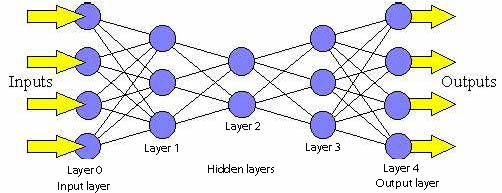
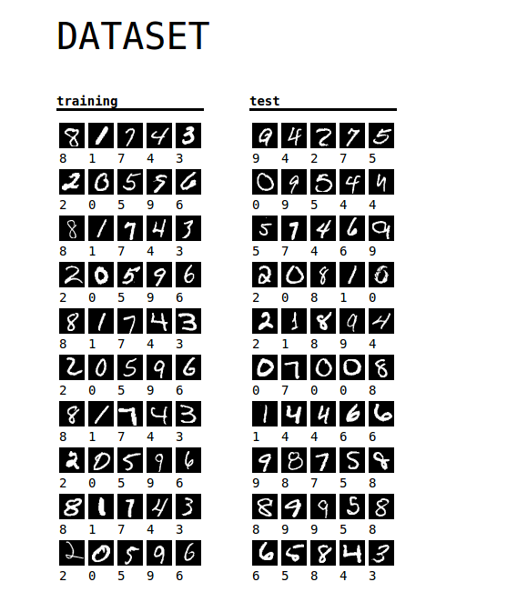
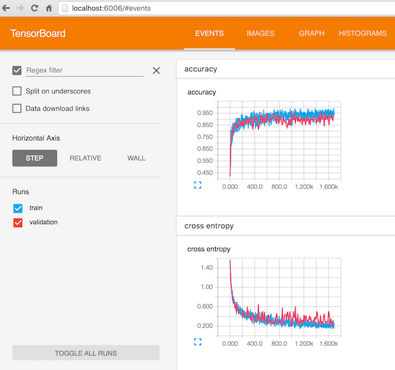

Introduction to Cortex
Kiran Karkera
Created: 2017-07-28 Fri 15:22
Neural Networks in Clojure
A machine learning task's pipeline comprises of the following tasks
- Data Extraction (from databases/web crawls/other sources)
- Data Preprocessing and cleaning
- Model training and evaluation
- Using trained model for inference
- Clojure (+Java) libraries are quite capable in all parts of the pipeline
- Excellent support for (non-neural network) machine learning toolkits
- Using a NN toolkit in a different language (such as Python) requires clunky cross-language interactions.
- Cortex fills an important need
- Pure Clojure NN toolkit
Exceptions
- Pretrained networks available for the task
- Relevant when training network from scratch can take weeks
Alternatives:
- Data collection, preparation, cleaning in Clojure
- Train in a different toolset, inference in Clojure/Java
- For example, train in Tensorflow / DeepLearning4J
- Use trained network for inference from Java or Clojure
Machine Learning Digression
Supervised Machine Learning:
When you are a kid and you see different types of animals, your father tells you that this particular animal is a dog. After doing this a few times, you see a new type of dog that you never saw before - you identify it as a dog and not as a cat or a monkey or a potato.

Applications of Supervised Learning
- One of the early successes for supervised machine learning was reading the zip code in postal mail.
- Dataset called MNIST is a benchmark dataset in machine learning

Figure 2: Handwritten digits

- Classifying aspects of human faces such as gender, age, type of expression and skin colour

Why are Neural Networks popular?
- NNs offer state of the art performance in several classification tasks.
- 0.21% error rate on MNIST, close to or better than human performance
- Composable abstractions
- different layers can be combined in a modular fashion and computations are straightforward
- Distributed learning is feasible
- GPUs enabled several breakthroughs
Flexibility
- NNs can accommodate several outputs:
- Single target classification (e.g. Spam classification)
- Multi target classification (e.g multiple objects in an image)
- Sequences (e.g. sentence generation)
- Composability extends to different domains
- (e.g the im2txt model, which takes an image as input and returns a text description as output).

Architecture of Feedforward Networks
- A feedforward network is one where units do not form a cycle.
- Networks contain 1 input layer, 1 output layer and one or more hidden layers
- According to the Universal approximation theorem just one hidden layer is enough
- But may not be optimal for learning

Weights in a network
- Each of the connections between layers has a weight attached to it.

Transfer function
- Activation function combines the inputs
- Transfer function modifies the scalar output (e.g. squashes it)
- The terms activation/transfer function used interchangeably.

Cortex
The Cortex library is a relatively recent library that implements Neural Networks in pure Clojure.
Features:
- Multiple backends (GPU and CPU)
- Supports popular network types (Feedforward/CNNs)
- Other types of cells (e.g. GRU/LSTM) can be implemented
- Model serialization supported in multiple formats (edn/nippy)
- Fairly active (~900 commits/11 releases/24 contributors)
Steps to create, train and do inference with Cortex
- Define a network with input, output and hidden layers
- Create train / test datasets
- Create a listener if required
- Train the classifier using the perform-experiment or train-n API
- While training, evaluate performance of key metrics
- Run inference on test instances
Network Definition
- A Cortex network is vector consisting of layer definitions
- Arguments depend on the type of layers
- First layer is the input, last is output, rest are hidden layers
(def network [(layers/input 2 1 1 :id :data) (layers/linear 1 :weights [[-0.2 0.2]]) (layers/logistic :id :labels)])
Layer Examples
- Input layer takes the shape of the x, y and z axes of a cube
;; Example Input layer for a 28 x 28 pixel monochrome image (layers/input 28 28 1 :id :data) ;; Input layer for 2 scalar inputs, rest of the dimensions are set to 1 (layers/input 2 1 1 :id :data)
Hidden Layers
;;- Linear layer with 1 hidden unit (layers/linear 1) ;;dropout layer ;;argument is the probability of surviving, value of 1 means no dropout (layers/dropout 0.75) ;;batch normalization (layers/batch-normalization)
Softmax Output Layer
;;pre-final linear layer with 1 output (layers/linear 1) ;;output is a bernoulli distribution (probability of 1 or 0) (layers/logistic :id :labels) ;;;;;;;;;;;;;;;;;;;;;;;;;;;;;;;;;;;;;;;;;;;;;;;;;;;;;;;;;;;;;; ;;;;;;;;;;;;;;;;;;;;;;;;;;;;;;;;;;;;;;;;;;;;;;;;;;;;;;;;;;;;;; ;;pre-final linear layer with 10 outputs (layers/linear 10) ;;output the probabilities of 10 outcomes (layers/softmax :id :labels)
Creating train (and test) datasets
- Dataset is a vector of training instances
- Each training instance is a map with 2 keys
;;2 training instances [{:data [0.9 0.1] :labels [1.0]} {:data [0.1 0.1] :labels [0.0]}]
Create a listener (if required)
Why create a listener?
- To observe progress of training
- To stop training when performance is optimal
- To checkpoint/save network state at
- Fixed number of iterations (e.g 1 million, 2 million )
- Accuracy milestones (e.g. 80%, 85%)
- Default listener
- Live updates on a local webserver
- Creates png images from training instances to observe training progress
(:require [cortex.experiment.classification :as cls]) (defn create-listener "initializes any prerequisites for listening functions, and returns a listener function. Arguments: - observation->image-fn: A function that can take observation data and return png data for web display. - class-mapping: A map with two entries - `:class-name->index` a map from class name strings to softmax indexes - `:index->class-name` a map from softmax indexes to class name strings Trains the net indefinitely on the provided training data, evaluating against the test data, and gives live updates on a local webserver hosted at http://localhost:8091." [observation->image-fn class-mapping argmap] ;;... ) ;;example for MNIST (cls/create-listener mnist-observation->image class-mapping args)


Digression: Tensorboard
- Tensorboard is a suite of visualization tools to understand, debug and optimize Tensorflow
- Users can view plots of
- Scalar metrics such as Accuracy/ error / F1 score
- Tensor metrics such as weights, biases
- Histograms of metric's progressions over time.
- Can help debug training problems such as the vanishing gradient problem

Tensorboard listener
- Listen for Cortex events and convert it to Tensorboard compatible events
- Out of the box support for
- train loss and cross validation loss
- weight and bias histograms
Usage:
- Pass a map with the file name to log events to
- (Note: it need to have "tfevents.*" as part of the name)
(:require [cortex.experiment.classification :as cls]) (cls/create-tensorboard-listener ;;file name should include "tfevents" {:file-path "/tmp/tflogs/linear/tfevents.linear.out"}) ;;launch tensorboard with log path ;;tensorboard --logdir=/tmp/tflogs
Train the model
- Using the cortex.experiment.classification/perform-experiment API
- Specify additional options such as number of epochs
- If :epoch-count not provided, it trains forever
(:require [cortex.experiment.classification :as cls]) (cls/perform-experiment description train-ds test-ds listener {:epoch-count 10})
Perform inference
(:require [cortex.nn.execute :as execute] [cortex.experiment.train :as train] [cortex.nn.network :as network]) (let [trained-network (train/load-network "trained-network.nippy") input-data [{:data [5000.0 10.0]} {:data [5.0 100000.0]}]] (->> (execute/run trained-network input-data) (map :labels)))
Training on the loan dataset
- Simulated dataset with 10000 observations
- The aim here is to predict which customers will default on their credit card debt
- default A factor with levels No and Yes indicating whether the customer defaulted on their debt
- These are the independent variables
- balance The average balance that the customer has remaining on their credit card after making their monthly payment
- income Income of customer
Read the dataset
- Dataset consists of vector of 10k instances
- Each instance is a map with :data and :labels
(->> "test/data/default.csv" (slurp) (s/split-lines) (rest) ;; ignore the header row (map (fn [l] (drop 2 (s/split l #"," )))) ;; ignore id, student cols (mapv (fn [[^String default ^String balance ^String income]] {:data [(Double. balance) (Double. income)] :labels (if (= default "\"Yes\"") [1.0] [0.0])}))))
Define the network
- Define input and output layers along with 1 hidden layer
(def description [(layers/input 2 1 1 :id :data) ;;width height channels & args ;;Fix the weights to make the unit test work. (layers/linear 1 :weights [[-0.2 0.2]]) (layers/logistic :id :labels)])
Run training
(let [ds (shuffle (logtest/default-dataset)) ds-count (count ds) ;;do a 90-10 split into train/test cutoff (int (* 0.9 ds-count)) train-ds (take cutoff ds) test-ds (drop cutoff ds) listener (cls/create-tensorboard-listener {:file-path "/tmp/tflogs/linear/tfevents.linear.out"})] (cls/perform-experiment description train-ds test-ds listener ;;run for 10 training epochs {:epoch-count 10}))
Demo
Logistic demo
#assumes pwd is cortex root folder #checkout the latest tag git checkout v0.9.11 cd experiment/ #create output folder for log files mkdir /tmp/tflogs #run test that compares performance of 4 different networks lein test :only cortex.experiment.tensorboard-test #docker #load the latest tensorflow instance to load files from /tmp/tflogs #this is mounted on the docker instance at the /tflogs folder docker run -it -p 8888:8888 --entrypoint "/bin/bash" -v /tmp/tflogs/:/tflogs tensorflow/tensorflow #to get IP address of container docker inspect -f '{{range .NetworkSettings.Networks}}{{.IPAddress}}{{end}}' <containerid> #returns dockerip
- Inside the docker container, execute
tensorboard --port 8888 --logdir=/tflogs
- Navigate to http://dockerip:8888
MNIST demo
cd examples/mnist-classification
mkdir /tmp/tflogs/mnist
lein run --tensorboard-output /tmp/tflogs/mnist/mnist.tfevents.out
Resources
- Cortex project @ Github
- Tensorboard documentation
- tfevent-sink project @ Github
- This project converts Cortex events to Tensorflow compatible events
- This presentation is at https://github.com/shark8me/cortex-tensorboard-presentation
- (html) and the org-mode source.
Thanks to
- Team that created Cortex